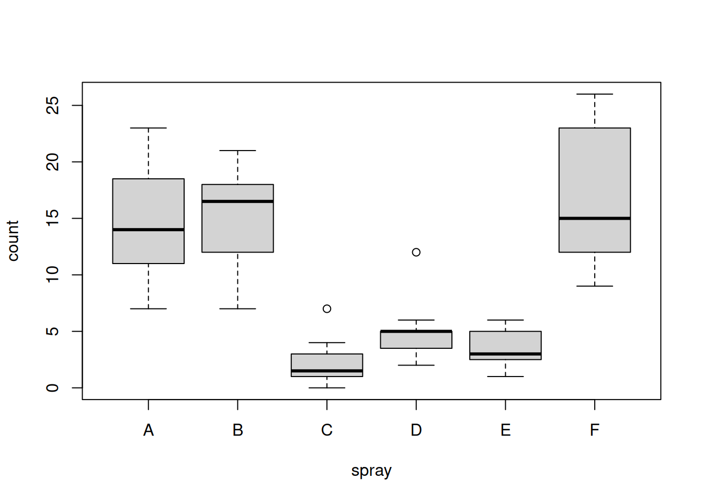
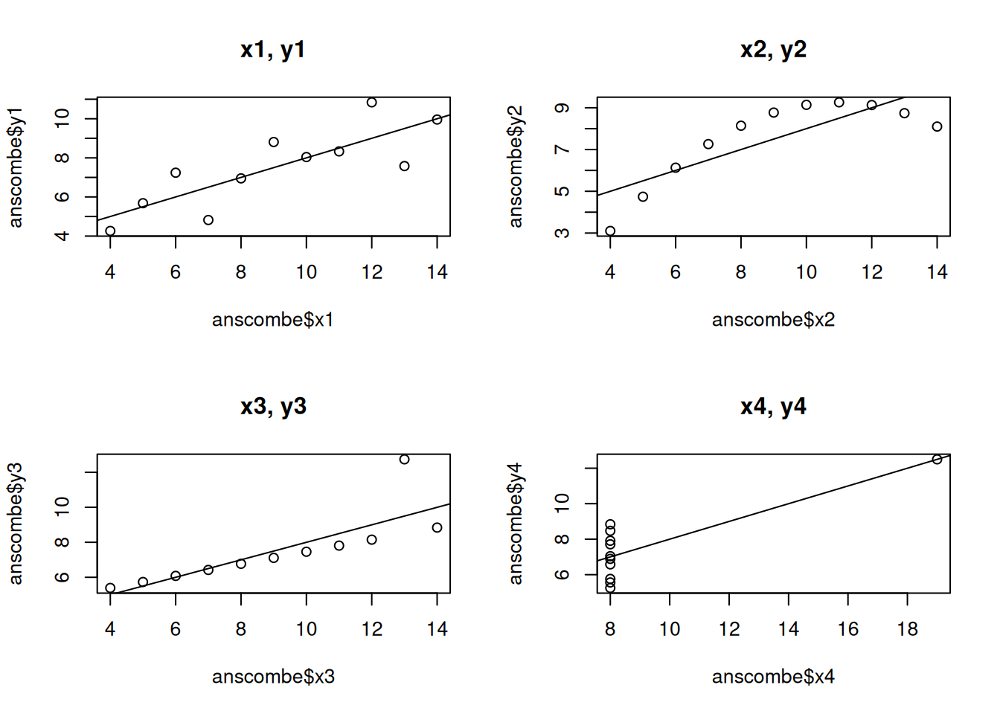
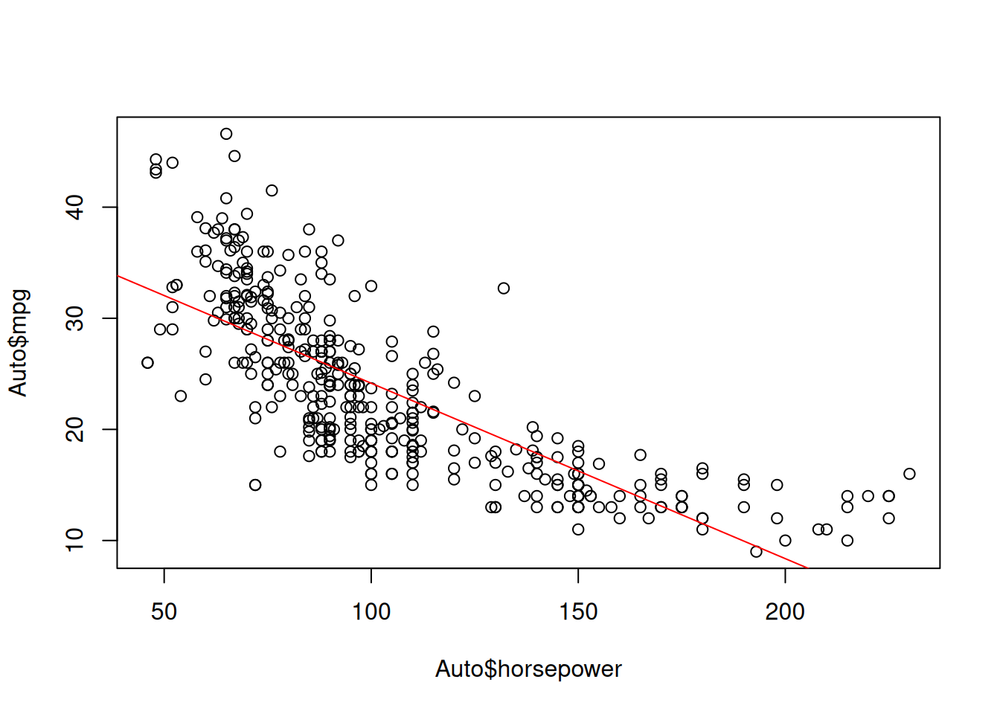

# Define vectors
winner <- c(193, 183, 191, 185, 185, 182, 182, 188, 188, 188, 185, 185, 177,
182, 182, 193, 183, 179, 179, 175)
opponent <- c(163, 191, 165, 187, 175, 193, 185, 187, 188, 173, 180, 177, 183,
185, 180, 180, 182, 178, 178, 173)Classical and Bayesian Statistics - Exercises
Problems 1
a
It seems that, in total, the Allied and Axis countries had about the same number of civilian deaths. However, if we compare the numbers per party member, we see that the Axis countries had a higher average amount of deaths. On the other hand, the data from the Allies is inconsistent (see Denmark).
b
The percentages in the chart do not sum up to 100%.
c
I
We can assume that Linda is a bank teller and is active in the feminist movement. Her experiences from the past could have influenced her behavior and thinking on certain topics. She may have a sense for justice and equality, regardless of the topic.
II
We can assume that Steve is a librarian because of his helpful personality and his need for order and structure, much like what’s found in a library. His passion for details may also be connected to a desire for knowledge.
III
A Ball costs $0.05.
IV
There are more death by heart diseases than accidents.
d
Since the engine is the only thing that keeps a plane in the air, it makes sense for it to be more armoured than the rest of the plane. Even if other parts have more bullet holes on average (e.g. the fuselage), the plane could still fly.
Problem 1.2
a
# Determine length
cat("Length of vector winners =", length(winner), "\n") # Add line breakLength of vector winners = 20 cat("Length of vector opponent =", length(opponent))Length of vector opponent = 20b
cat("Entries 6 to 10 =",winner[6:10]) # Index starts at 1Entries 6 to 10 = 182 182 188 188 188c
cat("Some values from winner:", winner[c(3, 5, 10, 12)]) # Passing a vector for selectionSome values from winner: 191 185 188 185d
cat("Current values:",winner[c(8, 9)], "\n") # Check valuesCurrent values: 188 188 winner[c(8, 9)] <- 189 # Reassign
cat("New values:", winner[c(8, 9)]) # Check valuesNew values: 189 189e
mu_winner <- mean(winner)
mu_opponent <- mean(opponent)
cat("Mean higth of winner vs. opponent:", mu_winner, "vs.", mu_opponent)Mean higth of winner vs. opponent: 184.35 vs. 180.15f
mu_diff <- mu_winner - mu_opponent
cat("Differences between means =", mu_diff)Differences between means = 4.2g
var_winner <- var(winner)
sd_winner <- sd(winner)
cat("Variance / Std. deviation of winner:", var_winner, "/", sd_winner)Variance / Std. deviation of winner: 25.08158 / 5.008151h
my_variance <- function(data){
mu <- mean(data)
sum_of_squares <- sum((data - mu)^2)
variance <- sum_of_squares / (length(data) - 1)
return(variance)
}
my_stdDeviation <- function(variance){
stdDevition <- sqrt(variance)
return(stdDevition)
}
my_var_winner <- my_variance(winner)
my_sd_winner <- my_stdDeviation(my_var_winner)
cat("Variance of Winner =", my_var_winner, "\n") # Add line breakVariance of Winner = 25.08158 cat("Variance of Winner =", my_sd_winner)Variance of Winner = 5.008151Problem 1.3
grades <- c(4.2, 2.3, 5.6, 4.5, 4.8, 3.9, 5.9, 2.4, 5.9, 6, 4, 3.7, 5, 5.2, 4.5, 3.6, 5, 6, 2.8, 3.3, 5.5, 4.2, 4.9, 5.1)
grades <- sort(grades) # Sort values
original_mu <- mean(grades)
originla_meadian <- median(grades)
grades[9:11] <- 1 # Reassign values
new_mu <- mean(grades)
new_median <- median(grades)
cat("Original vs. New mean:", original_mu, "vs.", new_mu, "\n") # Add line breakOriginal vs. New mean: 4.5125 vs. 4.1 cat("Median stays the same:", originla_meadian, "=", new_median)Median stays the same: 4.65 = 4.65Problems 2
Probmel 2.1
a
# Read data
data <- read.csv('/home/nils/dev/mscids-notes/hs25/sa/data/husband_wife.csv')
head(data) age.husband height.husband age.wife height.wife
1 49 180 43 159
2 25 184 28 156
3 40 165 30 162
4 52 177 57 154
5 58 161 52 142
6 32 169 27 166b
summary(data) age.husband height.husband age.wife height.wife
Min. :20.00 Min. :155.0 Min. :18.00 Min. :141.0
1st Qu.:33.00 1st Qu.:169.0 1st Qu.:32.00 1st Qu.:156.0
Median :43.50 Median :172.0 Median :41.00 Median :160.0
Mean :42.92 Mean :172.8 Mean :40.68 Mean :160.3
3rd Qu.:53.00 3rd Qu.:177.0 3rd Qu.:50.00 3rd Qu.:165.0
Max. :64.00 Max. :190.0 Max. :64.00 Max. :176.0 For each column, we see a brief summary with quantitative and qualitative information about the data.
c
age_diff <- data$age.husband - data$age.wife # Calc age difference
boxplot(age_diff)
d
- The median of age_diff is about 2.5. On average, the age difference between husbands and wives is around 2.5 years.
- 50% of the differences lie between approximately 0 and 5 years.
- There are more upper than lower outliers, meaning that extreme cases where the husband is much older than the wife occur more frequently.
- In addition, the values of the upper outliers are larger than those of the lower ones.
Problem 2.2
head(InsectSprays) # Preview data from head count spray
1 10 A
2 7 A
3 20 A
4 14 A
5 14 A
6 12 Aa
tapply(InsectSprays$count, InsectSprays$spray, mean) A B C D E F
14.500000 15.333333 2.083333 4.916667 3.500000 16.666667 b
boxplot(count ~ spray,
data = InsectSprays)
Problem 2.3
data <- read.csv('/home/nils/dev/mscids-notes/hs25/sa/data/Diet.csv')
head(data) Person gender Age Height pre.weight Diet weight6weeks
1 25 NA 41 171 60 2 60.0
2 26 NA 32 174 103 2 103.0
3 1 0 22 159 58 1 54.2
4 2 0 46 192 60 1 54.0
5 3 0 55 170 64 1 63.3
6 4 0 33 171 64 1 61.1# Add column weight.los
data$weight.loss <- data$weight6weeks - data$pre.weight
data$weight.loss [1] 0.0 0.0 -3.8 -6.0 -0.7 -2.9 -2.8 -2.0 -2.0 -8.5 -1.9 -3.1 -1.5 -3.0 -3.6
[16] -0.9 2.1 -2.0 -1.7 -4.3 -7.0 -0.6 -2.7 -3.6 -3.0 -2.0 -4.2 -4.7 -3.3 0.5
[31] -7.0 -5.6 -3.4 -6.8 -7.8 -5.4 -6.8 -7.2 -7.0 -7.3 -0.9 -7.6 -4.1 -6.3 -5.0
[46] 0.6 -1.1 -4.5 -4.1 -9.0 -2.4 -3.9 -3.5 -5.1 -3.5 -4.2 -2.4 -5.8 -3.5 -5.3
[61] -1.7 -5.4 -6.1 -7.9 1.4 -4.3 -2.5 -0.9 -3.5 -0.5 -2.8 -8.6 -4.5 -2.8 -4.1
[76] -5.3 -9.2 -6.1tapply(data$weight.loss, data$Diet, mean) 1 2 3
-3.300000 -3.025926 -5.148148 According to the data, diet 3 appears to have the greatest effect on weight loss over the 6-week therapy period. Diets 1 and 2 show more or less the same effect, although patients following diet 2 lost slightly less weight on average.
boxplot(data$weight.loss ~ data$Diet)
- Even though diet 3 appears to have the greatest effect according to the median, it also has the largest interquartile range (IQR) among the three diets.
- Diet 2 shows the greatest overall spread across the entire boxplot
- Diet 1 is influenced by several lower outliers.
Problem 2.4
a
The probabilities of ‘heads’ and ‘tails’ do not add up to 1.
b
The calculated probability is negative. That’s not possible by definition.
c
The union of the quantities S and M cannot be 0.7, because men cannot be pregnant.
Problem 2.5
a
Sample space of the experiment:
\[ \Omega = \{ (i, j) \mid i, j \in \{1,2,3,4,5,6\} \} \]
b
\[ p(\omega_n) = \dfrac{1}{36} = 0.02\bar{7} \]
c
Events, where the sum is 7:
\[ E_1 = {(1, 6), (2, 5), (3, 4)} \]
Note: Since there are two dices, we can multiply the number of favourable results by 2.
Now, we can calculate the probability:
\[ p(E_1) = \dfrac{6}{36} = 0.1\bar{6} \]
d
\[ E_2 = {(1, 1), (1, 2), (2, 1)} \]
\[ p(E_2) = \dfrac{3}{36} = 0.08\bar{3} \]
e
\[ E_3 = \{ (i, j) \mid i, j \in \{1,3,5\} \} \]
\[ p(E_3) = \dfrac{9}{36} = 0.25 \]
f
p_e2 <- 3/36
p_e3 <- 9/36
p_intersection <- 1/36
p_annual <- p_e2 + p_e3 - p_intersection
print(p_annual)[1] 0.3055556Problem 2.6
p_A <- 3/4
p_B <- 2/3a
p_bothEvents <- p_A * p_B
print(p_bothEvents)[1] 0.5b
p_atLeastOne <- p_A + p_B - p_A * p_B
print(p_atLeastOne)[1] 0.9166667c
p_atMostOne <- 1 - p_A * p_B
cat(p_atMostOne)0.5d
p_noEvent <- 1 - (p_A + p_B - p_A * p_B)
print(p_noEvent)[1] 0.08333333e
p_exactlyOneEvent <- p_A + p_B - 2 * p_A * p_B
print(p_exactlyOneEvent)[1] 0.4166667Problem 2.7
p_earthquake <- 0.04
p_typhoon <- 0.08
p_annual <- p_earthquake + p_typhoon - p_earthquake * p_typhoon
print(p_annual)[1] 0.1168Problems 3
Problem 3.1
\[ p_2 = 1 - 0.3 - 0.1 - 0.2 - 0.3 = 0.1 \]
Problem 3.2
a
The probabilities in the table sum to one, so it is a probability distribution.
\[ \sum P(X = k) = 1 \]
b
\[ p(2 \le k \le 4) = 0.2 + 0.2 + 0.1 = 0.5 \]
c
\[ p(k \gt 2) = 0.2 + 0.1 + 0.1 = 0.4 \]
d
\[ p(k \le 4) = 1 - 0.1 = 0.9 \]
e
\[ p(k \gt 1) = 1 - 0.4 = 0.6 \]
Problem 3.3
a
\[ p(k \le 13) = 0.992 \]
b
\[ p(k \ge 10) = 1 - 0.939 = 0.061 \]
c
\[ p(k = 15) = 1 - 0.999 = 0.001 \]
d
\[ p(9 \le k \le 12) = 0.989 - 0.711 = 0.282 \]
Problem 3.4
a
\[ \Omega = \{\text{TTT}, \text{TTH}, \text{THT}, \text{HTT}, \text{THH}, \text{HTH}, \text{HHT}, \text{HHH}\} \] \[ P(X = 0) = \frac{1}{8} \] \[ P(X = 1) = \frac{3}{8} \] \[ P(X = 2) = \frac{3}{8} \] \[ P(X = 3) = \frac{1}{8} \]
b
\[ p(x = 2) = \frac{3}{8} \]
c
\[ p(X \ge 2) = \frac{3}{8} + \frac{1}{8} = \frac{1}{2} \]
d
\[ p(X \le 1) = \frac{1}{8} + \frac{3}{8} = \frac{1}{2} \]
Problem 3.5
x_k <- c(-5, -4, 1, 3, 6)
p <- c(0.3, 0.1, 0.2, 0.3)
p_k <- 1 - sum(p) # Calc p_k
cat("Probability of -4 =", p_k, "\n")Probability of -4 = 0.1 p <- c(0.3, p_k, 0.1, 0.2, 0.3) # Reassign p
mu <- sum(x_k * p) # Calc expected value
mu[1] 0.6Problem 3.6
a
\[ p(x) = \frac{1}{6} + \frac{1}{6} = \frac{1}{3} \]
b
x <- 2:12 # Sum of eyes
p <- c(1, 2, 3, 4, 5, 6, 5, 4, 3, 2, 1) / 36 # Probability of summed eyes
mu = sum(x * p)
mu[1] 7var = sum((x - mu)**2 * p)
var[1] 5.833333sd = sqrt(var)
sd[1] 2.415229Problems 4
Problem 4.2
# Define distr. paras
mu <- 4
sd <- 1.25a
# Assume normal distr.
pnorm(q = 2.5, mean = mu, sd = sd)[1] 0.1150697b
1 - pnorm(q = 5.0, mean = mu, sd = sd)[1] 0.2118554c
pnorm(q = 4.5, mean = mu, sd = sd) - pnorm(q = 3.0, mean = mu, sd = sd)[1] 0.4435663d
qnorm(0.98, mean=mu, sd=sd)[1] 6.567186Problem 4.3
# Define distr. paras
mu <- 2.2
sd <- 0.3
# Assume normal distr.
1 - pnorm(q=3.1, mean=mu, sd=sd/sqrt(100))[1] 0Problem 4.4
# Define distr. paras
mu <- 8.2
sd <- 6.0a
# Assume normal distr.
pnorm(q=10.0, mean=mu, sd=sd/sqrt(36))[1] 0.9640697b
pnorm(q=10.0, mean=mu, sd=sd/sqrt(36)) - pnorm(q=5.0, mean=mu, sd=sd/sqrt(36))[1] 0.9633825c
1- pnorm(q=20.0, mean=mu, sd=sd/sqrt(36))[1] 0d
It’s small, but not impossible. We also assume a normal distribution. The real distribution probability may differ from the normal distribution. We also use a very small sample size of 36.
e
Yes, the i.i.d. assumption holds here because each of the 36 passengers is an individual who is independent of the others.
Problem 4.5
# Define distr. paras
mu <- 77
sd <- 15
course_1 <- 25
course_2 <- 64a
# Assume normal distr.
pnorm(q=82, mean=mu, sd=sd/sqrt(course_1)) - pnorm(q=72, mean=mu, sd=sd/sqrt(course_1))[1] 0.9044193b
pnorm(q=82, mean=mu, sd=sd/sqrt(course_2)) - pnorm(q=72, mean=mu, sd=sd/sqrt(course_2))[1] 0.9923392For a larger group, the probability is more likely to be at the mean compared to a smaller group (CLT).
Problems 5
Problem 5.1
- \(H_0\): \(\mu = \mu_0 = 70\)
- \(H_A\): \(\mu \lt 70\)
Rejection range:
data <- c(71, 69, 67, 68, 73, 72, 71, 71, 68, 72, 69, 72)
sd <- 1.5
mu_hat <- mean(data)
qnorm(p = 0.05, mean = 70, sd = 1.5/sqrt(12))[1] 69.28776Test:
pnorm(q = mu_hat, mean = 70, sd = 1.5 / sqrt(12))[1] 0.7181486We do not reject the null hypothesis.
- p-value: 0.718
The mean of the sample does not statistical deviate from the producers claimed mean.
Problem 5.2
a
- \(H_0\): \(\mu = \mu_0 = 50\)
- \(H_A\): \(\mu \lt 50\)
data <- c(46, 48, 52, 49, 46, 51, 52, 47, 49, 44, 48, 51, 49, 50, 53, 47)
sd <- 3.0
mu_hat <- mean(data)
pnorm(q = mu_hat, mean = 50, sd = 3.0/sqrt(16))[1] 0.0668072We do not reject the null hypothesis.
- p-value: 0.0668072
b
data <- c(46, 48, 52, 49, 46, 51, 52, 47, 49, 44, 48, 51, 49, 50, 53, 47)
sd <- 3.0
mu_hat <- mean(data)
pnorm(q = mu_hat, mean = 50, sd = 3.0/sqrt(100))[1] 8.841729e-05We reject the null hypothesis.
Problems 6
Problem 6.1
a
- Paired samples: We use the same people for the before and after smoking measurements.
- One-sided: We are only interested in increasing platelet accumulation.
- Null hypothesis: The amount of platelets is the same before and after smoking.
- Alternative hypothesis: The number of platelets is higher after smoking than before.
b
- Paired: The height of each self-pollinated seedling corresponds to the height of the cross-pollinated ‘partner’.
- One-sided: We are only interested if the plants grow bigger.
- Null hypothesis: There is no difference between cross-pollinated and self-pollinated plants. Alternative hypothesis: There is a significant difference between the two groups.
c
Unpaired: We have two distinct groups.
Two-sided: We are interested in any effect on blood pressure.
Null hypothesis: There is no difference in blood pressure between the two groups.
Alternative hypothesis: There is a difference between the two groups. ### d
Unpaired: We have two distinct groups.
Two-sided: We are interested in the number of iron forms.
Null hypothesis: There is no difference in the amount of iron between the groups/forms.
Alternative hypothesis: There is a difference between the groups.
Problem 6.2
a
These are paired samples. Measurements are taken at the same location with both gauges.
b
It’s a one-sided test because we are assuming that the values from gauge B are larger.
c
gauge_a <- c(120, 265, 157, 187, 219, 288, 156, 205, 163)
gauge_b <- c(127, 281, 160, 185, 220, 298, 167, 203, 171)
t.test(x=gauge_a, y=gauge_b, alternative="less", paired=TRUE, conf.level=0.95)
Paired t-test
data: gauge_a and gauge_b
t = -2.7955, df = 8, p-value = 0.01168
alternative hypothesis: true mean difference is less than 0
95 percent confidence interval:
-Inf -1.93449
sample estimates:
mean difference
-5.777778 There is a statistically significant difference.
Problem 6.3
a
The samples are unpaired because we are comparing two different groups: males and females.
b
- Null hypotheses: There is no difference in length between the two groups.
- Alternative hypothesis: There is a difference in length between the two groups.
c
male <- c(120, 107, 110, 116, 114, 111, 113, 117, 114, 112)
female <- c(110, 111, 107, 108, 110, 105, 107, 106, 111, 111)
t.test(x=male, y=female, alternative="two.sided", paired=FALSE, conf.level=0.95)
Welch Two Sample t-test
data: male and female
t = 3.4843, df = 14.894, p-value = 0.00336
alternative hypothesis: true difference in means is not equal to 0
95 percent confidence interval:
1.861895 7.738105
sample estimates:
mean of x mean of y
113.4 108.6 There is a statistically significant difference.
d
wilcox.test(x=male, y=female, alternative="two.sided", paired=FALSE, conf.level=0.95)Warning in wilcox.test.default(x = male, y = female, alternative = "two.sided",
: cannot compute exact p-value with ties
Wilcoxon rank sum test with continuity correction
data: male and female
W = 87.5, p-value = 0.004845
alternative hypothesis: true location shift is not equal to 0There is a statistically significant difference.
e
The result of the Wilcoxon-test is more trustworthy because, unlike the t-test, it does not assume that the data are normally distributed and we cannot verify this condition in any way.
Problem 6.4
a
Unpaired test: We investigated the calorie content of two different groups.
b
Two-sided: We are interested in any difference.
c
- Null hypotheses: There is no difference between the two groups.
- Alternative hypothesis: There is a difference between the two groups.
d
beef <- c(186, 181, 176, 149, 184, 190, 158, 139, 175, 148, 152, 111, 141, 153, 190, 157, 131, 149, 135, 132)
poultry <- c(129, 132, 102, 106, 94, 102, 87, 99, 170, 113, 135, 142, 86, 143, 152, 146, 144)
mean_beef <- mean(beef)
mean_poultry <- mean(poultry)
cat(mean_beef, "vs", mean_poultry)156.85 vs 122.4706The calorie content of beef hot dogs seems to be much higher than that of poultry hot dogs. The null hypothesis may be rejected
e
Since there is no indication whether the data are normally distributed, we choose a Wilcoxon test as a precautionary measure.
f
wilcox.test(x=beef, y=poultry, alternative="two.sided", paired=FALSE, conf.level=0.95)Warning in wilcox.test.default(x = beef, y = poultry, alternative =
"two.sided", : cannot compute exact p-value with ties
Wilcoxon rank sum test with continuity correction
data: beef and poultry
W = 285.5, p-value = 0.0004549
alternative hypothesis: true location shift is not equal to 0There is a statistically significant difference.
Problem 6.5
a
zh <- c(16.3, 12.7, 14.0, 53.3, 117, 62.6, 27.6)
bl <- c(10.4, 8.91, 11.7, 29.9, 46.3, 25.0, 29.4)
mean_zh <- mean(zh, na.rm=FALSE)
mean_bl <- mean(bl, na.rm=FALSE)
sd_zh <- sd(zh, na.rm=FALSE)
sd_bl <- sd(bl, na.rm=FALSE)
cat("ZH: Mean =", mean_zh, "and SD =", sd_zh, "\n")ZH: Mean = 43.35714 and SD = 38.02301 cat("BL: Mean =", mean_bl, "and SD =", sd_bl)BL: Mean = 23.08714 and SD = 13.66495b
The samples are unpaired if we argue that the cities constitute the experimental units.
c
- Null hypotheses: There is no difference between the two groups.
- Alternative hypothesis: There is a difference between the two groups.
d
t.test(x=zh, y=bl, alternative="two.sided", paired=FALSE, conf.level=0.95)
Welch Two Sample t-test
data: zh and bl
t = 1.3273, df = 7.5245, p-value = 0.2233
alternative hypothesis: true difference in means is not equal to 0
95 percent confidence interval:
-15.33677 55.87677
sample estimates:
mean of x mean of y
43.35714 23.08714 There is not a statistically significant difference.
e
\([-15.33677, 55.87677]\)
f
wilcox.test(x=zh, y=bl, alternative="two.sided", paired=FALSE, conf.level=0.95)
Wilcoxon rank sum exact test
data: zh and bl
W = 34, p-value = 0.2593
alternative hypothesis: true location shift is not equal to 0There is not a statistically significant difference.
Problem 6.6
mf <- read.csv("/home/nils/dev/mscids-notes/hs25/sa/data/husband_wife.csv")
diff <- mf$age.husband - mf$age.wife
boxplot(diff, col = "orange")
a
I
It is a paired test. For each test unit (married couple) there are two associated measurements (age husband, age wife).
II
We are not sure whether the husbands are really older than their wives. It is simply our impression and not a fact. So perform do a two-sided test.
III
- Null hypotheses: There is no difference between the two groups.
- Alternative hypothesis: There is a difference between the two groups.
t.test(x=mf$age.husband, y=mf$age.wife, alternative="two.sided", paired=TRUE, conf.level=0.95)
Paired t-test
data: mf$age.husband and mf$age.wife
t = 7.1518, df = 169, p-value = 2.474e-11
alternative hypothesis: true mean difference is not equal to 0
95 percent confidence interval:
1.618286 2.852302
sample estimates:
mean difference
2.235294 There is a statistically significant difference.
IV
wilcox.test(x=mf$age.husband, y=mf$age.wife, alternative="two.sided", paired=TRUE, conf.level=0.95)
Wilcoxon signed rank test with continuity correction
data: mf$age.husband and mf$age.wife
V = 9460, p-value = 3.977e-12
alternative hypothesis: true location shift is not equal to 0There is a statistically significant difference.
b
I
It is an unpaired and a two-sided test.
II
- Null hypotheses: There is no difference between the two groups.
- Alternative hypothesis: There is a difference between the two groups.
III
t.test(x=mf$height.husband, y=mf$height.wife, , mu=13, alternative="two.sided", paired=FALSE, conf.level=0.95)
Welch Two Sample t-test
data: mf$height.husband and mf$height.wife
t = -0.63293, df = 336.53, p-value = 0.5272
alternative hypothesis: true difference in means is not equal to 13
95 percent confidence interval:
11.18772 13.92993
sample estimates:
mean of x mean of y
172.8471 160.2882 There is not a statistically significant difference.
Problem 6.7
a
The test is paired because we measure the temperature of the same patients both before and after treatment.
b
One-sided: We are interested in its fever-lowering effect.
c
- Null hypotheses: There is no difference between the two groups.
- Alternative hypothesis: There is a significant difference between the two groups.
d
t1 <- c(39.1, 39.3, 38.9, 40.6, 39.5, 38.4, 38.6, 39.0, 38.6, 39.2)
t2 <- c(38.1, 38.3, 38.8, 37.8, 38.2, 37.3, 37.6, 37.8, 37.4, 38.1)
t.test(x=t1, y=t2, alternative="greater", paired=TRUE, conf.level=0.95)
Paired t-test
data: t1 and t2
t = 5.6569, df = 9, p-value = 0.0001554
alternative hypothesis: true mean difference is greater than 0
95 percent confidence interval:
0.7976252 Inf
sample estimates:
mean difference
1.18 There is a statistically significant difference.
e
wilcox.test(x=t1, y=t2, alternative="greater", paired=TRUE, conf.level=0.95)Warning in wilcox.test.default(x = t1, y = t2, alternative = "greater", :
cannot compute exact p-value with ties
Wilcoxon signed rank test with continuity correction
data: t1 and t2
V = 55, p-value = 0.002865
alternative hypothesis: true location shift is greater than 0There is a statistically significant difference.
f
The p-value of the Wilcoxon-test is greater than the p-value of the t-test. Since the Wilcoxon-test assumes less (no normal distribution) than the t-test, there is an additional uncertainty. The null hypothesis is less strongly rejected.
Problem 6.8
a
True
b
True
c
True
d
True
e
True
Problems 7
Problem 7.1
a
inc <- read.table("/home/nils/dev/mscids-notes/hs25/sa/data/income.dat", header=TRUE)b
# Plot data
plot(inc$Educ, inc$Income2005)
# Add linear reg to plot
abline(lm(inc$Income2005 ~inc$Educ), col="red")
c
m <- lm(inc$Income2005 ~inc$Educ)
m$coefficients(Intercept) inc$Educ
-40199.575 6451.475 - a: The regression line crosses the \(y\) axis at the point \(x\) = -40199.575.
- b: Fore one step at the direction \(x\) (one year of education), we increase the salary by 6451.475.
d
cat("The correlaiton between the education and income is:", cor(inc$Educ, inc$Income2005))The correlaiton between the education and income is: 0.3456474The corralation value ist near to O. The data points correlate loosly.
Problem 7.2
a
head(anscombe) x1 x2 x3 x4 y1 y2 y3 y4
1 10 10 10 8 8.04 9.14 7.46 6.58
2 8 8 8 8 6.95 8.14 6.77 5.76
3 13 13 13 8 7.58 8.74 12.74 7.71
4 9 9 9 8 8.81 8.77 7.11 8.84
5 11 11 11 8 8.33 9.26 7.81 8.47
6 14 14 14 8 9.96 8.10 8.84 7.04b
par(mfrow=c(2,2))
plot(anscombe$x1, anscombe$y1)
reg <- lm(anscombe$y1 ~ anscombe$x1)
abline(reg)
title("x1, y1")
plot(anscombe$x2, anscombe$y2)
reg <- lm(anscombe$y2 ~ anscombe$x2)
abline(reg)
title("x2, y2")
plot(anscombe$x3, anscombe$y3)
reg <- lm(anscombe$y3 ~ anscombe$x3)
abline(reg)
title("x3, y3")
plot(anscombe$x4, anscombe$y4)
reg <- lm(anscombe$y4 ~ anscombe$x4)
abline(reg)
title("x4, y4")
c
lm(y1 ~ x1, data = anscombe)
Call:
lm(formula = y1 ~ x1, data = anscombe)
Coefficients:
(Intercept) x1
3.0001 0.5001 lm(y2 ~ x2, data = anscombe)
Call:
lm(formula = y2 ~ x2, data = anscombe)
Coefficients:
(Intercept) x2
3.001 0.500 lm(y3 ~ x3, data = anscombe)
Call:
lm(formula = y3 ~ x3, data = anscombe)
Coefficients:
(Intercept) x3
3.0025 0.4997 lm(y4 ~ x4, data = anscombe)
Call:
lm(formula = y4 ~ x4, data = anscombe)
Coefficients:
(Intercept) x4
3.0017 0.4999 The model coefficients are almost identical.
d
cat("The correlaiton between the x1 and y1 is:", cor(anscombe$x1, anscombe$y1), "\n")The correlaiton between the x1 and y1 is: 0.8164205 cat("The correlaiton between the x2 and y2 is:", cor(anscombe$x2, anscombe$y2), "\n")The correlaiton between the x2 and y2 is: 0.8162365 cat("The correlaiton between the x3 and y3 is:", cor(anscombe$x3, anscombe$y3), "\n")The correlaiton between the x3 and y3 is: 0.8162867 cat("The correlaiton between the x4 and y4 is:", cor(anscombe$x4, anscombe$y4))The correlaiton between the x4 and y4 is: 0.8165214The correlation value is almost identical.
Problem 7.3
# install.packages("ISLR")
library(ISLR)a
head(Auto) mpg cylinders displacement horsepower weight acceleration year origin
1 18 8 307 130 3504 12.0 70 1
2 15 8 350 165 3693 11.5 70 1
3 18 8 318 150 3436 11.0 70 1
4 16 8 304 150 3433 12.0 70 1
5 17 8 302 140 3449 10.5 70 1
6 15 8 429 198 4341 10.0 70 1
name
1 chevrolet chevelle malibu
2 buick skylark 320
3 plymouth satellite
4 amc rebel sst
5 ford torino
6 ford galaxie 500b/c
plot(Auto$horsepower, Auto$mpg)
model <- lm(mpg ~ horsepower, data=Auto)
summary(model)
Call:
lm(formula = mpg ~ horsepower, data = Auto)
Residuals:
Min 1Q Median 3Q Max
-13.5710 -3.2592 -0.3435 2.7630 16.9240
Coefficients:
Estimate Std. Error t value Pr(>|t|)
(Intercept) 39.935861 0.717499 55.66 <2e-16 ***
horsepower -0.157845 0.006446 -24.49 <2e-16 ***
---
Signif. codes: 0 '***' 0.001 '**' 0.01 '*' 0.05 '.' 0.1 ' ' 1
Residual standard error: 4.906 on 390 degrees of freedom
Multiple R-squared: 0.6059, Adjusted R-squared: 0.6049
F-statistic: 599.7 on 1 and 390 DF, p-value: < 2.2e-16I
The fuel consumption depends on the horsepower.
II
The \(y\) value at position \(x\) = 0 value has no practical meaning here.
III
confint(model) 2.5 % 97.5 %
(Intercept) 38.525212 41.3465103
horsepower -0.170517 -0.1451725The confidence interval indicates the most likely range of values.
IV
summary(model)$r.squared[1] 0.6059483The \(R^2\) value is 0.606. This indicates that the variability to 60 % is through the model.
d
plot(Auto$horsepower, Auto$mpg)
model <- lm(mpg ~ horsepower, data=Auto)
abline(model, col="red")
Problem 7.4
a
# ?MASS::Bostonb
library(MASS)
colnames(Boston) [1] "crim" "zn" "indus" "chas" "nox" "rm" "age"
[8] "dis" "rad" "tax" "ptratio" "black" "lstat" "medv" c
attach(Boston)d
I/II
model <- lm(medv ~ lstat, data=Boston)
summary(model)
Call:
lm(formula = medv ~ lstat, data = Boston)
Residuals:
Min 1Q Median 3Q Max
-15.168 -3.990 -1.318 2.034 24.500
Coefficients:
Estimate Std. Error t value Pr(>|t|)
(Intercept) 34.55384 0.56263 61.41 <2e-16 ***
lstat -0.95005 0.03873 -24.53 <2e-16 ***
---
Signif. codes: 0 '***' 0.001 '**' 0.01 '*' 0.05 '.' 0.1 ' ' 1
Residual standard error: 6.216 on 504 degrees of freedom
Multiple R-squared: 0.5441, Adjusted R-squared: 0.5432
F-statistic: 601.6 on 1 and 504 DF, p-value: < 2.2e-16e
names(model) [1] "coefficients" "residuals" "effects" "rank"
[5] "fitted.values" "assign" "qr" "df.residual"
[9] "xlevels" "call" "terms" "model" f
coef(model)(Intercept) lstat
34.5538409 -0.9500494 At the data point \(x\) = 0, we start at a value of 34.6. Fore every step in \(x\) direction, we lose -0.95. The p-value for lstat is close to 0 and therefore highly significant.
g
confint(model) 2.5 % 97.5 %
(Intercept) 33.448457 35.6592247
lstat -1.026148 -0.8739505The model shows that the true \(x\) and \(y\) values lies between this ranges.
h
par(mfrow=c(1,1))
plot(Boston$medv, Boston$lstat)
abline(model, col="red")
i
summary(model)$r.squared[1] 0.5441463The \(R^2\)-value is 0.5441, so about 54 % of the variability is explained by the model.
Problems 8
Problem 8.1
Auto <- read.csv("/home/nils/dev/mscids-notes/hs25/sa/data/auto.csv")
# Read data
head(Auto) X mpg cylinders displacement horsepower weight acceleration year origin
1 1 18 8 307 130 3504 12.0 70 1
2 2 15 8 350 165 3693 11.5 70 1
3 3 18 8 318 150 3436 11.0 70 1
4 4 16 8 304 150 3433 12.0 70 1
5 5 17 8 302 140 3449 10.5 70 1
6 6 15 8 429 198 4341 10.0 70 1
name
1 chevrolet chevelle malibu
2 buick skylark 320
3 plymouth satellite
4 amc rebel sst
5 ford torino
6 ford galaxie 500# Remove var "name"
Auto_1 <- within(Auto, rm(name))
head(Auto_1) X mpg cylinders displacement horsepower weight acceleration year origin
1 1 18 8 307 130 3504 12.0 70 1
2 2 15 8 350 165 3693 11.5 70 1
3 3 18 8 318 150 3436 11.0 70 1
4 4 16 8 304 150 3433 12.0 70 1
5 5 17 8 302 140 3449 10.5 70 1
6 6 15 8 429 198 4341 10.0 70 1a
pairs(Auto_1)
b
cor(Auto_1) X mpg cylinders displacement horsepower
X 1.0000000 0.5863298 -0.3602752 -0.3871458 -0.4229250
mpg 0.5863298 1.0000000 -0.7776175 -0.8051269 -0.7784268
cylinders -0.3602752 -0.7776175 1.0000000 0.9508233 0.8429834
displacement -0.3871458 -0.8051269 0.9508233 1.0000000 0.8972570
horsepower -0.4229250 -0.7784268 0.8429834 0.8972570 1.0000000
weight -0.3217474 -0.8322442 0.8975273 0.9329944 0.8645377
acceleration 0.2909849 0.4233285 -0.5046834 -0.5438005 -0.6891955
year 0.9967805 0.5805410 -0.3456474 -0.3698552 -0.4163615
origin 0.2005760 0.5652088 -0.5689316 -0.6145351 -0.4551715
weight acceleration year origin
X -0.3217474 0.2909849 0.9967805 0.2005760
mpg -0.8322442 0.4233285 0.5805410 0.5652088
cylinders 0.8975273 -0.5046834 -0.3456474 -0.5689316
displacement 0.9329944 -0.5438005 -0.3698552 -0.6145351
horsepower 0.8645377 -0.6891955 -0.4163615 -0.4551715
weight 1.0000000 -0.4168392 -0.3091199 -0.5850054
acceleration -0.4168392 1.0000000 0.2903161 0.2127458
year -0.3091199 0.2903161 1.0000000 0.1815277
origin -0.5850054 0.2127458 0.1815277 1.0000000The scatter plot and correlation value show a high positive correlation between the horsepower and displacement variables.
c
model <- lm(mpg ~ ., data=Auto_1)
summary(model)
Call:
lm(formula = mpg ~ ., data = Auto_1)
Residuals:
Min 1Q Median 3Q Max
-9.6234 -2.1948 -0.1499 1.8294 12.9947
Coefficients:
Estimate Std. Error t value Pr(>|t|)
(Intercept) -7.800e+01 4.259e+01 -1.831 0.06785 .
X -2.829e-02 1.971e-02 -1.436 0.15196
cylinders -4.564e-01 3.239e-01 -1.409 0.15956
displacement 1.715e-02 7.744e-03 2.215 0.02735 *
horsepower -1.431e-02 1.389e-02 -1.030 0.30348
weight -6.378e-03 6.546e-04 -9.745 < 2e-16 ***
acceleration 7.505e-02 9.878e-02 0.760 0.44790
year 1.622e+00 6.092e-01 2.663 0.00807 **
origin 1.455e+00 2.785e-01 5.224 2.88e-07 ***
---
Signif. codes: 0 '***' 0.001 '**' 0.01 '*' 0.05 '.' 0.1 ' ' 1
Residual standard error: 3.323 on 383 degrees of freedom
Multiple R-squared: 0.8224, Adjusted R-squared: 0.8187
F-statistic: 221.7 on 8 and 383 DF, p-value: < 2.2e-16I
The variables predict the response variable, mpg, statistically.
II
It seems that the variables horsepower and year have the greatest impact on the response variable mpg.
III
The variable year indicates a high positive correlation with the response variable mpg.
d
model <- lm(mpg ~ weight * year, data=Auto_1)
summary(model)
Call:
lm(formula = mpg ~ weight * year, data = Auto_1)
Residuals:
Min 1Q Median 3Q Max
-8.0397 -1.9956 -0.0983 1.6525 12.9896
Coefficients:
Estimate Std. Error t value Pr(>|t|)
(Intercept) -1.105e+02 1.295e+01 -8.531 3.30e-16 ***
weight 2.755e-02 4.413e-03 6.242 1.14e-09 ***
year 2.040e+00 1.718e-01 11.876 < 2e-16 ***
weight:year -4.579e-04 5.907e-05 -7.752 8.02e-14 ***
---
Signif. codes: 0 '***' 0.001 '**' 0.01 '*' 0.05 '.' 0.1 ' ' 1
Residual standard error: 3.193 on 388 degrees of freedom
Multiple R-squared: 0.8339, Adjusted R-squared: 0.8326
F-statistic: 649.3 on 3 and 388 DF, p-value: < 2.2e-16Problem 8.2
boston <- read.csv("/home/nils/dev/mscids-notes/hs25/sa/data/boston.csv")
head(boston) X crim zn indus chas nox rm age dis rad tax ptratio black lstat
1 1 0.00632 18 2.31 0 0.538 6.575 65.2 4.0900 1 296 15.3 396.90 4.98
2 2 0.02731 0 7.07 0 0.469 6.421 78.9 4.9671 2 242 17.8 396.90 9.14
3 3 0.02729 0 7.07 0 0.469 7.185 61.1 4.9671 2 242 17.8 392.83 4.03
4 4 0.03237 0 2.18 0 0.458 6.998 45.8 6.0622 3 222 18.7 394.63 2.94
5 5 0.06905 0 2.18 0 0.458 7.147 54.2 6.0622 3 222 18.7 396.90 5.33
6 6 0.02985 0 2.18 0 0.458 6.430 58.7 6.0622 3 222 18.7 394.12 5.21
medv
1 24.0
2 21.6
3 34.7
4 33.4
5 36.2
6 28.7a
pairs(boston)
model <- lm(medv ~ lstat + age, data=boston)
summary(model)
Call:
lm(formula = medv ~ lstat + age, data = boston)
Residuals:
Min 1Q Median 3Q Max
-15.981 -3.978 -1.283 1.968 23.158
Coefficients:
Estimate Std. Error t value Pr(>|t|)
(Intercept) 33.22276 0.73085 45.458 < 2e-16 ***
lstat -1.03207 0.04819 -21.416 < 2e-16 ***
age 0.03454 0.01223 2.826 0.00491 **
---
Signif. codes: 0 '***' 0.001 '**' 0.01 '*' 0.05 '.' 0.1 ' ' 1
Residual standard error: 6.173 on 503 degrees of freedom
Multiple R-squared: 0.5513, Adjusted R-squared: 0.5495
F-statistic: 309 on 2 and 503 DF, p-value: < 2.2e-16- \(\hat{\beta}_0\) = 33.22: In neighborhoods where there is no population of lower status and no units build before 1940, the medium value of houses is $ 33 220.
- \(\hat{\beta}_1\) = −1.03: For each additional percent of population of lower status, the medium value decreases by $ 1030.
- \(\hat{\beta}_2\) = 0.03: For each additional percent of units build before 1949, the medium value increases by $ 30.
- All p-values are significant (below the significance level of 5 %), so all esti mates individually contribute significantly to the model.
- The \(R^2\) value is 0.5513, therefore about 55 % of the variation is explained by the model.
- The p-value of the F value is below the significance level and therefore significant. The null hypothesis is rejected.
b
model <- lm(medv ~ ., data=boston)
summary(model)
Call:
lm(formula = medv ~ ., data = boston)
Residuals:
Min 1Q Median 3Q Max
-15.8948 -2.7585 -0.4663 1.7963 26.0911
Coefficients:
Estimate Std. Error t value Pr(>|t|)
(Intercept) 36.461352 5.100994 7.148 3.21e-12 ***
X -0.002526 0.002080 -1.215 0.225046
crim -0.108762 0.032855 -3.310 0.001000 **
zn 0.048031 0.013785 3.484 0.000538 ***
indus 0.019932 0.061468 0.324 0.745871
chas 2.705245 0.861298 3.141 0.001786 **
nox -17.541602 3.822390 -4.589 5.66e-06 ***
rm 3.839225 0.418422 9.175 < 2e-16 ***
age -0.001938 0.013380 -0.145 0.884866
dis -1.493304 0.199892 -7.471 3.68e-13 ***
rad 0.324925 0.068111 4.771 2.43e-06 ***
tax -0.011598 0.003807 -3.046 0.002443 **
ptratio -0.947985 0.130822 -7.246 1.67e-12 ***
black 0.009357 0.002685 3.485 0.000536 ***
lstat -0.526184 0.050704 -10.377 < 2e-16 ***
---
Signif. codes: 0 '***' 0.001 '**' 0.01 '*' 0.05 '.' 0.1 ' ' 1
Residual standard error: 4.743 on 491 degrees of freedom
Multiple R-squared: 0.7414, Adjusted R-squared: 0.734
F-statistic: 100.6 on 14 and 491 DF, p-value: < 2.2e-16The p-value is almost 1, so not significant at all. But in the first model, the p-value is 0.005, which is significant. That means that the variable age must correlate strongly with other variables.
c
The more variables you have the bigger the \(R^2\) value. That means that the \(R^2\) is not a good indicator to compare different models.
d
model <- lm(medv ~ lstat * age, data=boston)
summary(model)
Call:
lm(formula = medv ~ lstat * age, data = boston)
Residuals:
Min 1Q Median 3Q Max
-15.806 -4.045 -1.333 2.085 27.552
Coefficients:
Estimate Std. Error t value Pr(>|t|)
(Intercept) 36.0885359 1.4698355 24.553 < 2e-16 ***
lstat -1.3921168 0.1674555 -8.313 8.78e-16 ***
age -0.0007209 0.0198792 -0.036 0.9711
lstat:age 0.0041560 0.0018518 2.244 0.0252 *
---
Signif. codes: 0 '***' 0.001 '**' 0.01 '*' 0.05 '.' 0.1 ' ' 1
Residual standard error: 6.149 on 502 degrees of freedom
Multiple R-squared: 0.5557, Adjusted R-squared: 0.5531
F-statistic: 209.3 on 3 and 502 DF, p-value: < 2.2e-16- \(\hat{\beta}_0\) = 36.10: In neighborhoods where there is no population of lower status and no units build before 1940, the medium value of houses is $ 36 100.
- \(\hat{\beta}_1\) = −1.39: For each additional percent of population of lower status, the medium value decreases by $ 1930.
- \(\hat{\beta}_2\) = −0.00072: For each additional percent of units build before 1949, the medium value decreases by $ 0.27. As you can imagine, this value is not significant, as you can see from the output.
- \(\hat{\beta}_{12}\) = 0.004: This coefficient is somewhat difficult to interpret and we didn’t do it in class.
- Not all p-values are significant (below the significance level of 5 %) any- more.
- The \(R^2\) value is 0.56, therefore about 56 % of the variation is explained by the model.
- The p-value of the F value is below the significance level and therefore significant. The null hypothesis H0 is rejected.
Problem 8.3
a
cs <- read.csv("/home/nils/dev/mscids-notes/hs25/sa/data/carseats.csv")
head(cs) X Sales CompPrice Income Advertising Population Price ShelveLoc Age Education
1 1 9.50 138 73 11 276 120 Bad 42 17
2 2 11.22 111 48 16 260 83 Good 65 10
3 3 10.06 113 35 10 269 80 Medium 59 12
4 4 7.40 117 100 4 466 97 Medium 55 14
5 5 4.15 141 64 3 340 128 Bad 38 13
6 6 10.81 124 113 13 501 72 Bad 78 16
Urban US
1 Yes Yes
2 Yes Yes
3 Yes Yes
4 Yes Yes
5 Yes No
6 No Yesb
model <- lm(Sales ~ Price + Urban + US, data=cs)
summary(model)
Call:
lm(formula = Sales ~ Price + Urban + US, data = cs)
Residuals:
Min 1Q Median 3Q Max
-6.9206 -1.6220 -0.0564 1.5786 7.0581
Coefficients:
Estimate Std. Error t value Pr(>|t|)
(Intercept) 13.043469 0.651012 20.036 < 2e-16 ***
Price -0.054459 0.005242 -10.389 < 2e-16 ***
UrbanYes -0.021916 0.271650 -0.081 0.936
USYes 1.200573 0.259042 4.635 4.86e-06 ***
---
Signif. codes: 0 '***' 0.001 '**' 0.01 '*' 0.05 '.' 0.1 ' ' 1
Residual standard error: 2.472 on 396 degrees of freedom
Multiple R-squared: 0.2393, Adjusted R-squared: 0.2335
F-statistic: 41.52 on 3 and 396 DF, p-value: < 2.2e-16c
- According to the model, 13.04 this is the average sales figures in shops reached in rural areas outside the USA, with the price of child seats still being $0 (not very realis-tic).
- The coefficient −0.05 indicates that for an increase of one dollar, an average of 0.05 units of child seats are sold less.
- The coefficient −0.021 means that on average 0.021 less units are sold in urban areas compared to rural areas. However, the p value is very high, so this is more of a random variation.
- The 1.2 coefficient means that 1.2 more units are sold within the US compared to shops outside the USA. Perhaps child seats are compulsory in the USA.
d
\[ \text{Sales} = \beta_0 + \beta_1 \cdot \text{Price} + \beta_2 \cdot \text{Urban} + \beta_3 \cdot \text{US} \]
Note: General model!
e
For all except Urban.
f
model <- lm(Sales ~ Price + Urban, data=cs)
summary(model)
Call:
lm(formula = Sales ~ Price + Urban, data = cs)
Residuals:
Min 1Q Median 3Q Max
-6.5324 -1.8441 -0.1443 1.6662 7.5000
Coefficients:
Estimate Std. Error t value Pr(>|t|)
(Intercept) 13.621458 0.655230 20.789 <2e-16 ***
Price -0.053104 0.005367 -9.895 <2e-16 ***
UrbanYes 0.034095 0.278293 0.123 0.903
---
Signif. codes: 0 '***' 0.001 '**' 0.01 '*' 0.05 '.' 0.1 ' ' 1
Residual standard error: 2.535 on 397 degrees of freedom
Multiple R-squared: 0.198, Adjusted R-squared: 0.194
F-statistic: 49.01 on 2 and 397 DF, p-value: < 2.2e-16g
The model lm(Sales ~ Price + Urban + US, data=cs) is a mutible regression while the smaller model model <- lm(Sales ~ Price + Urban, data=cs) is a simple liniear regression.
Problems 10
Problem 10.1
| Pop | Lib | NotLib | |
|---|---|---|---|
| A | 40% | 50% | 50% |
| B | 25% | 60% | 40% |
| C | 35% | 35% | 65% |
\[ P(B|L) = \dfrac{P(L|B)P(B)}{P(L)} \]
- \(P(L|B) = 60\%\)
- \(P(B)\) = 25%$
- \(P(L) = [P(L∣A)⋅P(A)]+[P(L∣B)⋅P(B)]+[P(L∣C)⋅P(C)] = 0.20+0.15+0.1225=0.4725\)
\[ P(B|L) = \dfrac{0.6 \cdot 0.25}{0.4725} \approx 0.3175 = 31.75\% \]
Problem 10.2
a
| 1 | 2 | 3 | 4 | |
|---|---|---|---|---|
| Model A | 1/4 | 1/4 | 1/4 | 1/4 |
| Model B | 1/10 | 2/10 | 3/10 | 4/10 |
| Model C | 12/25 | 12/50 | 12/75 | 12/100 |
- Model A: Fairest model since all values have the same likelihood.
- Model B: Unfair model. Value 4 has the highest chance of appearing.
- Model C: Unfair model. Value 1 has the highest chance of appearing.
b
First try: After 100 throws, the results seem evenly distributed and reflect the distribution from model A. Second try: We can see that value 1 appears much more frequently than value 4. It resembles model C.
Problem 10.4
Since we don’t know whether it’s heads or tails, we need to assume a priori a 50% probability for each outcome.
Problem 10.5
| Ice Creame | Fruits | French Fries | Pop | |
|---|---|---|---|---|
| 1st graders | 0.3 | 0.6 | 0.1 | 0.2 |
| 6th graders | 0.6 | 0.3 | 0.1 | 0.2 |
| 11th graders | 0.3 | 0.1 | 0.6 | 0.6 |
| Overall | 0.36 | 0.24 | 0.4 | 1 |
Classical and Bayesian Statistics - Exercises – mscids-notes Classical and Bayesian Statistics - Exercises – mscids-notes Classical and Bayesian Statistics - Exercises – mscids-notes mscids-notes